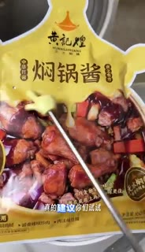
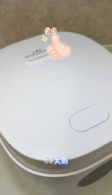

主打作品 · 产品宣传
食品宣传视频
从酱料包装切到食材入锅和倒酱，用操作近景交代烹饪过程。


切换封面 · 键盘 ← / →
Selected Work
5 支视频 · 点击画面播放
主打作品 · 产品宣传
从酱料包装切到食材入锅和倒酱，用操作近景交代烹饪过程。


广告短片
拆箱、包装和掰开拉丝的特写交替出现，把可可福团的质地留在画面中心。
口播短片
以坐姿口播串起故事，中间穿插泰式餐厅门头和餐桌画面，补充现场信息。
口播短片
在人物口播、门店和餐品特写之间切换，用重点大字强调叙述中的关键句。
餐饮探店
从夜间店招切到上桌的双味小火锅，再用夹菜和锅底特写展示用餐现场。
Career Interests
短视频与纪实短片剪辑，涵盖粗剪、精剪、字幕包装与调色。
短视频与纪实短片拍摄，结合分镜规划、机位与画面构图。
About Me
余若韩影视编导
我在河南艺术职业学院学习影视编导，求职方向是剪辑与拍摄。校内实训和校园纪实短片项目中，我参与脚本与拍摄筹备，也负责后期剪辑和画面包装。
项目经历 · 2025.04–2025.06
负责文案和分镜，完成粗剪、精剪、动态字幕、基础特效、调色与音效匹配。
实训经历 · 2025.05–2025.06
参与短片脚本和拍摄筹备，负责后期剪辑与包装，并按团队反馈调整叙事节奏。
教育经历 · 2024.09–2027.06
影视编导 · 大专
专业工具
Premiere Pro、After Effects、剪映、Photoshop